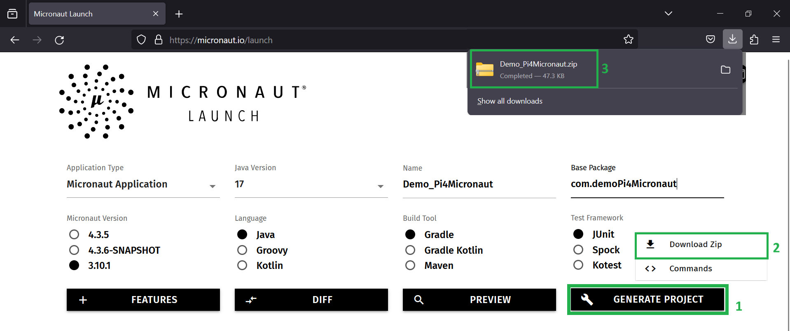
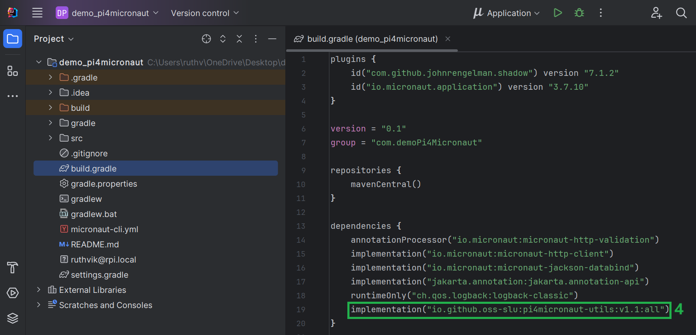
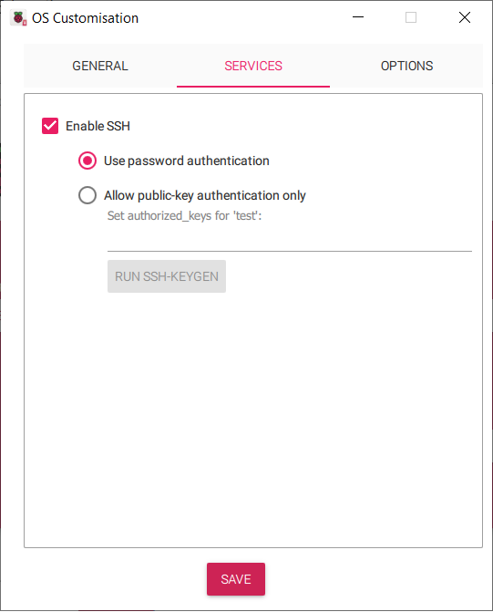
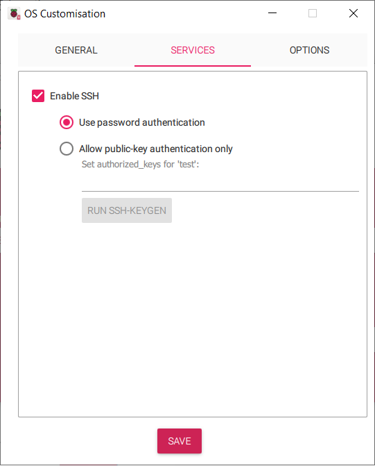
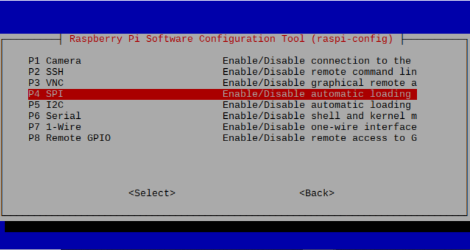

1. Introduction
Welcome to the Pi4Micronaut Documentation!
Pi4Micronaut is an Open Source Java library which utilizes the Micronaut Framework and Pi4J to streamline the process of creating custom IoT applications that require hardware connectivity to Raspberry Pi’s.
By reading through our documentation, you will learn how to implement our library into your application.
1.1. How to use the Pi4Micronaut library
This section will walk you through the process of creating a basic Micronaut application and the configuration for developing with Pi4Micronaut. As a demo, this will include the configuration and sample code.
1.1.1. Creating A Micronaut Project
-
Go to Micronaut’s website here.
-
Make sure you have selected Micronaut version 3.10.1 or lower with Java version 17.
-
Click Generate Project and download the zip.
-
Export the contents of the zip file and open it in IntelliJ or any IDE of your choice.
It should look like: 
1.1.2. Add Dependency
-
Go to the build.gradle file and find the dependencies.
-
Add the Pi4Micronaut dependency to the list.
implementation("io.github.oss-slu:pi4micronaut-utils:v1.0:all")It should look like: 
1.1.3. Setup Configuration
-
Go to the application.yml file and add the configuration of your circuit setup:
path: Demo_Pi4Micronaut/src/main/resources/application.yml
-
Create a new tree in the yml file as shown below.
pi4j: digital-output: led: name: LED address: 17 shutdown: LOW initial: LOW provider: pigpio-digital-outputHere we are specifying a led as a digital output type with name LED, address 17, etc. For more information on the LED setup guide, see our documentation here.
It should look like:


1.2. Build and Run the Jar File on Raspberry Pi
This section describes how to build and run the jar file from the Pi4Micronaut project demo on your raspberry pi.
1.2.1. Set up Raspberry Pi OS
-
Start by installing the Raspberry Pi Imager
-
To install the Imager, follow this guide by the Raspberry Pi Foundation here.
Note: use the same wifi network for your raspberry pi that your system is connected to
-
Your configuration should look something like this:
 

1.2.2. Connecting to Raspberry Pi
-
Get your Raspberry Pi plugged into a power source.
-
You can connect to your Pi several different ways.
-
Using the hostname, for example:
ssh {username}@{hostname}Using our above example configuration:
ssh test@raspberrypi-test -
Using the IP address of your Pi:
Follow the instructions outlined in this article here.
-
1.2.3. Installing Java
-
First, make sure your Raspberry Pi’s package list is up-to-date by running the following commands in your Pi’s terminal:
sudo apt update sudo apt-get upgrade -y -
Next, install Java onto your Pi by running the following command:
sudo apt-get install default-jdk -yTo verify installation, run
java --versionFinally, install pigpio
sudo apt-get install pigpio
1.2.4. Build and Copy Over Jar File
-
Open your terminal of choice
-
Navigate to the project root directory
-
Enter the following command into the terminal to build the jar file:
./gradlew build -
The necessary jar file can be found under "Demo_Pi4Micronaut/build/libs/Demo_Pi4Micronaut-0.1-all.jar"
-
Once you have navigated to this directory, enter the following command:
scp Demo_Pi4Micronaut-0.1-all.jar {username}@{hostname}:~-
Here is an example command, that looks like
scp Demo_Pi4Micronaut-0.1-all.jar test@raspberrypi-test:~
-
1.2.5. Almost Done!
-
To test if you’ve set up everything correctly on your raspberry pi, we have some sample commands for you to run.
-
Open a new terminal and ssh into your raspberry pi.
-
Enter the following command to run the jar file:
sudo java -jar Demo_Pi4Micronaut-0.1-all.jarThe output should look like this:
With this, a Micronaut localhost server will start running on your machine
-
Let’s test the LED component which you have setup.
-
After getting everything set up, open up a new terminal and ssh into your pi once more.
-
Enter the following command to test the turn on function for an LED light:
curl http://localhost:8080/led/ledOn -
If this command works and the LED has lit up, congratulations! You have successfully built and ran one of our components!
1.2.6. Enabling Different Communication Protocols
-
In the Pi4Micronaut library, we have used different communication protocols, such as I2C, SPI, etc.
-
To enable any of these protocols when needed, enter the following command:
sudo raspi-config -
Navigate to "Interfacing Options"

-
Choose your desired protocol
 -
Reboot when prompted to
2. Currently Supported Hardware
If you plan on creating an application using any of the hardware components listed below, then our library is perfect for you!
We plan on offering support for many more hardware components in the future. If you have a hardware component you would like to use but can’t find, feel free to checkout how you can add support for it under "Contributing to the Library"
-
Push Button
-
Slide Switch
-
Rotary Encoder
-
RFID Scanner
-
LED
-
RGB LED
-
LCD Screen
-
Photosensor
-
Touch Switch Sensor
-
Active Buzzer
-
Passive Buzzer
-
PIR Motion Sensor
-
Ultrasonic Sensor
3. Contribute to the Pi4Micronaut Library
-
Get Familiar with the Library
-
Before making contributions,understand the purpose and functionality of the Pi4Micronaut library.
-
Review the library documentation, any related articles, or tutorials.
-
-
Set Up Your Development Environment
-
Fork the library’s repository from the GitHub.
-
Clone your fork locally.
-
Follow setup instructions provided in the repository’s README or ADOC files.
-
-
Understand the Contribution Process
-
Familiarize yourself with the library’s contribution guidelines.
-
Understand the community guidelines.
-
Find out the preferred method of communication (e.g., issues, mailing list, discord).
-
-
Identify a Way to Contribute
-
Bug fixes: Look for open issues tagged as 'bug' or report new ones.
-
New features: Discuss new ideas before implementing, to gauge interest and get guidance.
-
Documentation: Contribute to the README, ADOC or other documentation.
-
Testing: Improve or expand the test suite.
-
Refactoring: Optimize existing code or improve its readability.
-
-
Making Changes
-
Always create a new branch for your changes.
-
Follow the library’s coding style and standards.
-
Write clean, well-documented code.
-
Add or update tests for your changes, if necessary.
-
Commit frequently with meaningful commit messages.
-
-
Test Your Changes
-
Ensure that all tests pass.
-
Manually test your changes for unforeseen issues.
-
Ensure your changes do not introduce regressions.
-
Use your own hardware to test the new component integration.
-
Note: A test suite will be developed in future to test the components without the use of external hardware
-
-
Signing the Contributor License Agreement
-
While creating a pull request, you’ll be prompted to sign a Contributor License Agreement. Please do so by logging in with your GitHub account.
-
-
Submit a Pull Request (PR)
-
Push your changes to your forked repository. Create a pull request from your branch to the main library’s main branch.
-
In the PR description, explain your changes, motivations, and any decisions made.
-
Link to any related issues or discussions.
-
-
Respond to Feedback
-
Maintainers or other contributors might provide feedback. Be open to suggestions and make necessary revisions.
-
Engage in a constructive dialogue to ensure the quality of the contribution.
-
-
Stay Updated
-
Keep your fork synchronized with the main repository to ease future contributions.
-
Regularly check for updates or changes in the library’s contribution guidelines.
-
-
Engage with the Community
-
Attend community meetings or join chat groups.
-
Help other contributors or users when you can.
-
Note: While your contribution is highly valued, there’s no guarantee that all pull requests will be merged. It depends on the library’s direction, quality of the contribution, and decisions of the maintainers.
-
Thanks for considering a contribution to the Pi4Micronaut library! Your involvement helps make the project better for everyone.
3.1. How to Create a New Component
If its compatible with a Raspberry Pi then it should work well with the Pi4Micronaut framework. The following steps should encompass how most components are added to the framework, but should more or different steps be needed, use the Improve this doc link to suggest changes.
-
Determine if the device is Input or Output
-
Create a Controller:
-
Controllers define and handle interactions with a given component. The Controller of a component will have a
@Controller("/example")right above the class declaration that acts as the endpoint for requests to the component. Instead of "example", you should name the endpoint something that is identifiable to the component. Each method of the Controller should have a@Get("/examppleendpoint")above the method declaration. The endpoint for the method should have the same name as the method and any parameters should be included in the endpoint/examppleendpoint/{parameter1},{parameter2}. -
See the RGB Controller for an example of a Controller.
-
Consult the Micronaut Documentation for more explanation on Controllers.
-
All Controllers should be kept here:
components\src\main\java\com\opensourcewithslu\components\controllers
-
-
Create a Helper:
-
A Helper is what the Controller calls to do a action. For example, to change the color of an RGB LED the controller will take the request to change it. The Controller will then call the change color method in the helper. The helper then takes all the actions needed to change the color of the LED.
-
See the RBG Helper for an example of a Helper.
-
All Helpers should be kept here:
micronautpi4j-utils\src\main\java\com\opensourcewithslu\(inputdevices or outputdevices)
-
-
Add Component to the Application yml
-
The new component will need to be added to the application yml found at
components/src/main/resources/application.yml. -
More infomation on the
application.ymlfound in Communicating with a Hardware Component
-
-
Thoroughly test:
-
Contributors should thoroughly test their integrations
-
When submitting a pull request, make sure to include how you tested the component, any circuits that you may have used, and how to run any examples you may have created.
-
It is important that reviewers are able to replicated your work in order to properly test the implementation.
-
-
Create documentation for the component:
-
Create an .adoc file with the component name as the file name.
-
Make sure to include all the information that the other components. Simply copy/paste an existing components documentation and edit as needed.
-
Add the file here:
micronautpi4j-utils/src/docs/asciidoc/componentsunder either input or output components.
-
4. Adding to/Creating an Application
TODO: outline how to create a basic applicaton like we did for the start of the check-in system
TODO: outline how someone should add our jar to their exsisting application
5. Using the library
TODO: outline the most basic use cases of the library, tbh now sure how this differs from the section above
6. Components
6.1. Communicating with a Hardware Component
TODO: outline the use and access of application.yaml for an app
TODO: Consolidate the format and include examples of how each comm type is used
6.1.1. Digital Input
To define in application.yaml add digital-input as a field under pi4j, then add each component under digital-input Each component will need
-
name: Name of the component
-
address: GPIO pin associated with component
-
debounce:
-
pull: Either PULL_UP or PULL_DOWN depending on component
-
provider: pigpio-digital-input
digital-input:
photo-resistor-input: (1)
name: Photo Resistor Input (2)
address: 4 (3)
debounce: 100000 (4)
pull: PULL_DOWN (5)
provider: pigpio-digital-input (6)
button-input-1:
name: Push Button Input
address: 16
pull: PULL_DOWN
debounce: 30
provider: pigpio-digital-input
button-input-2:
name: Push Button Input
address: 21
pull: PULL_DOWN
debounce: 30
provider: pigpio-digital-input
button-input-3:
name: Push Button Input
address: 18
pull: PULL_DOWN
debounce: 30
provider: pigpio-digital-input
slide-switch-input:
name: Slide Switch Input
address: 18
pull: PULL_DOWN
debounce: 3000
provider: pigpio-digital-input
slide-switch-input-2:
name: Slide Switch Input
address: 22
pull: PULL_DOWN
debounce: 3000
provider: pigpio-digital-input
touch-switch-input:
name: Touch Switch Input
address: 17
pull: PULL_DOWN
debounce: 200000
provider: pigpio-digital-input
pir-sensor:
name: PIR Sensor
address: 13
pull: PULL_DOWN
debounce: 30000
provider: pigpio-digital-input
ultra-sonic-echo:
name: UltraSonic Sensor Input
address: 24
pull: PULL_DOWN
debounce: 3000
provider: pigpio-digital-input| 1 | Component Identifier (Used in @Named annotations) |
| 2 | Component Name |
| 3 | Address of connected GPIO pin |
| 4 | Debounce value |
| 5 | Pull value (PULL_UP or PULL_DOWN) |
| 6 | Provider (pigpio-digital-input) |
6.1.2. Digital Output
To define in application.yaml add digital-output as a field under pi4j, then add each component under digital-input Each component will need
-
name: Name of the component
-
address: GPIO pin associated with component
-
initial: Initial value, either LOW or HIGH
-
shutdown: State to take when program successfully shuts down properly, either LOW or HIGH
-
provider: pigpio-digital-output
digital-output:
led: (1)
name: LED Output (2)
address: 17 (3)
shutdown: LOW (4)
initial: LOW (5)
provider: pigpio-digital-output (6)
led2:
name: LED Output
address: 26
shutdown: HIGH
initial: HIGH
provider: pigpio-digital-output
photo-resistor-output:
name: Photo Resistor Output
address: 27
shutdown: LOW
initial: HIGH
provider: pigpio-digital-output
ultra-sonic-trig:
name: UltraSonic Sensor Output
address: 23
shutdown: LOW
initial: LOW
provider: pigpio-digital-output| 1 | Component Identifier (Used in @Named annotations) |
| 2 | Component Name |
| 3 | Address of connected GPIO pin |
| 4 | Value to have on shutdown (HIGH = Off, LOW = On) |
| 5 | Value to have on startup |
| 6 | Provider (pigpio-digital-output) |
6.1.3. Multipin Configurations
Multipin components are unique in that they require several of the same type of pin in order to function properly. Each class of multipin component (Digital Input, PWM), is declared slightly differently in the application.yaml file
multi-digital-input: (1)
rotary-encoder: (2)
name: Rotary Encoder (3)
addresses: 27,18,17 (4)
debounces: 6000,500,500 (5)
pulls: PULL_DOWN,PULL_UP,PULL_UP (6)
shutdown: LOW (7)
initial: HIGH (8)
provider: pigpio-digital-input (9)
rotary-encoder-2:
name: Rotary Encoder 2
addresses: 12, 16, 20
debounces: 6000, 500, 500
pulls: PULL_DOWN, PULL_UP, PULL_UP
shutdown: LOW
initial: HIGH
provider: pigpio-digital-input| 1 | Top level field for multipin digital inputs (equivlent of digital-output declaration) |
| 2 | Component Identifier (Used in @Named annotations) |
| 3 | Component Name |
| 4 | Addresses for each pin (Each component has a specific order outlined in the component description) |
| 5 | Debounce values for each pin (same order as above) |
| 6 | Pull values for each pin (same order as above) |
| 7 | Shutdown value (All pins have the same shut down) |
| 8 | Startup value (All pins have the same start up) |
| 9 | Provider (All pins have the same provider) |
| 1 | Top level field for multipin PWMs (equivlent of digital-output declaration) |
| 2 | Component Identifier (Used in @Named annotations) |
| 3 | Component Name |
| 4 | Addresses for each pin (Each component has a specific order outlined in the component description) |
| 5 | PWM types for each pin (same order as above) |
| 6 | Provider (All pins have the same provider) |
| 7 | Startup values (Same order as above) |
| 8 | Shutdown values (Same order as above) |
6.1.4. PWM
To define in application.yaml add digital-input as a field under pi4j, then add each component under digital-input Each component will need
-
name: Name of the component
-
address: GPIO pin associated with component
-
pwmType: Either SOFTWARE or HARDWARE based upon which type of PWM you wish to use
-
provider: pigpio-pwm
pwm:
active-buzzer:
name: active-buzzer
address: 17
pwmType: SOFTWARE
provider: pigpio-pwm
initial: 0
shutdown: 0
passive-buzzer:
name: passive-buzzer
address: 17
pwmType: SOFTWARE
provider: pigpio-pwm
initial: 0
shutdown: 0| 1 | Component Identifier (Used in @Named annotations) |
| 2 | Component Name |
| 3 | Address of connected GPIO pin |
| 4 | PWM Type (HARDWARE or SOFTWARE) |
| 5 | Provider (pigpio-digital-output) |
| 6 | Value to have on start up |
| 7 | Value to have on shut down |
6.1.5. SPI
spi:
rfid: (1)
name: MFRC522 (2)
address: 8 (3)
baud: 500000 (4)
reset-pin: 25 (5)| 1 | Component Identifier (Used in @Named annotations) |
| 2 | Component Name |
| 3 | TO DO: Figure out what this address is |
| 4 | Baud rate |
| 5 | Address of GPIO Reset pin |
TODO: add SPI information
6.2. Input Components
6.2.1. Push Button
Overview
This document provides details of the Push Button circuit, including its components, assembly instructions, and functionality.
Components
-
LED light
-
Push button
-
1 x 10 resistor
-
1 x 220 resistor
-
Breadboard
-
Jumper wires
-
Power source
Circuit Diagram
Model:
-
Note the 220 resistor is for the LED and the 10 for the button.

Circuit Diagram:

Troubleshooting
-
LED not lighting up: Check all connections, ensure the LED is placed correctly, and check the power source.
-
LED is too dim: The resistor value might be too high. Ensure you’re using the correct resistors or adjust according to your power source and LED specifications
YAML Pin Order
The order for declaring the pin for the LED is as follows:
digital-output:
led:
address: 17So the LED would be connected to GPIO 17.
The order for declaring the pin for the push button is as follows:
digital-input:
button-input-3:
address: 18So the push button would be connected to GPIO 18.
Constructors
Unresolved directive in components/inputComponents/pushButton.adoc - include::../../../../../../pi4micronaut-utils/src/main/java/com/opensourcewithslu/inputDevices/PushButtonHelper.java[tag=const]Methods
Unresolved directive in components/inputComponents/pushButton.adoc - include::../../../../../../pi4micronaut-utils/src/main/java/com/opensourcewithslu/inputDevices/PushButtonHelper.java[tags=method]An Example Controller
This controller uses the push button to turn an LED on and off
@Controller("/pushButton")
public class PushButtonController {
private final PushButtonHelper pushButtonHelper;
private final LEDHelper ledHelper;
public PushButtonController(@Named("button-input-3") DigitalInput pushButton,
@Named("led") DigitalOutput led) {
this.pushButtonHelper = new PushButtonHelper(pushButton);
this.ledHelper = new LEDHelper(led);
}
@Get("/init")
public void initController(){
pushButtonHelper.addEventListener(e ->{
if(pushButtonHelper.isPressed){
ledHelper.switchState();
}
});
}
}6.2.2. Slide Switch
Overview
This section provides the details of the Slide Switch circuit, including its components, assembly instructions, and functionality.
Components
-
Slide Switch
-
1 x 10 resistor
-
1 x Capacitor 104
-
Breadboard
-
7 x Jumper Wires
-
Power source (appropriate voltage, typically 3.3V or 5V)
Assembly Instructions
-
Place the slide switch and the capacitor vertically in the same column on the breadboard.
-
Connect the middle pin of the slide switch to the bottom pin of the capacitor.
-
Place the resistor so that one side is in the same row as the middle pin of the slide switch with the wire from step two between, and the other side to the top pin of the resistor.
-
Power the slide switch by connecting the 5V pin from the pin to the positive column of the breadboard and connecting the bottom pin of the slide switch to that column.
-
Connect the top pins of the slide switch and the capacitor to the negative column of the breadboard. Connect the GND pin of the Pi to that column.
-
Connect the GPIO18 pin of the Pi to the middle pin of the slide switch so that the resistor and the connection to the capacitor are between.

Functionality
Making a request to the switch will return whether the switch is on or off, flip the switch to change the state.
Testing the Circuit:
Use: curl http://localhost:8080/slideSwitch/switch1 to test the switch. This will either return true,if the switch is on, and false if the switch is off. Flip the switch and run the command again to see the opposite result of the first call.
Troubleshooting
Verify that all connections are correct and that the order of components in a row are correct.
YAML
The slide switch as it appears in the application.yml:
slide-switch-input:
name: Slide Switch Input
address: 18
pull: PULL_DOWN
debounce: 3000
provider: pigpio-digital-input
slide-switch-input-2:
name: Slide Switch Input
address: 22
pull: PULL_DOWN
debounce: 3000
provider: pigpio-digital-inputNote that there are two slide switches, one that uses GPIO 18 and the other uses GPIO 22.
Constructors
Unresolved directive in components/inputComponents/slideSwitch.adoc - include::../../../../main/java/com/opensourcewithslu/inputDevices/SlideSwitchHelper.java[tag=const]Methods
Unresolved directive in components/inputComponents/slideSwitch.adoc - include::../../../../main/java/com/opensourcewithslu/inputDevices/SlideSwitchHelper.java[tags=method]An Example Controller
This controller sets up two slide switches
@Controller("/slideSwitch")
public class SlideSwitchController {
private final SlideSwitchHelper slideSwitchHelper;
private final SlideSwitchHelper slideSwitchHelper2;
public SlideSwitchController(@Named("slide-switch-input")DigitalInput slideSwitch,
@Named("slide-switch-input-2")DigitalInput slideSwitch2) {
this.slideSwitchHelper = new SlideSwitchHelper(slideSwitch);
this.slideSwitchHelper2 = new SlideSwitchHelper(slideSwitch2);
}
@Get("/switch1")
public boolean checkSwitch1(){
return slideSwitchHelper.isOn;
}
@Get("/switch2")
public boolean checkSwitch2(){
return slideSwitchHelper2.isOn;
}
}6.2.3. Rotary Encoder
Overview
This section provides details of the Rotary Encoder circuit, including its components, assembly instructions, and functionality.
Assembly Instructions
Connect the 5 pins on the encoder to the breadboard along with the resistor as stated below and in the diagram.
-
Ground: Connect ground on the encoder to ground on the breadboard
-
Power: Connect the + on the encoder to the 3.3V on the breadboard
-
SW: Connect SW to GPIO 27 on the breadboard
-
DT: Connect DT to GPIO 17 on the breadboard
-
CLK: Connect CLK to GPIO 18 on the breadboard
-
Resistor: Place the resistor horizontally so that it is parallel with GPIO 27, having one side on the red + with the other next to the wire on GPIO 27
-
Connect a wire from 3.3V to the red + in the same column as the resistor

Functionality
-
The initial value returned is 0.
-
Turning the shaft one unit clockwise will increase the value returned by 1, whereas, turning the knob counterclockwise by one unit will decrease the value returned by 1.
-
The value returned is an integer with a max value of 2147483647 and min of -2147483647.
Testing the Circuit
To return the value of the rotary encoder:
$ curl http://localhost:8080/rotaryEncoder/valueTroubleshooting
-
Value not being returned: Make sure all pins on the encoder match up to the correct GPIO pins according to the YAML pin order below.
-
Make sure that a 10k resistor is being used
YAML Pin Order
The order for declaring pins for a Rotary Encoder component in the application.yaml file is as follows
SW-PIN-INFO, CLK-PIN-INFO, DT-PIN-INFO
So in the case of
multi-digital-input:
rot-encoder:
addresses: 17, 18, 27the sw pin would be the one connected to GPIO 27, the clk pin would be connected to GPIO 18, and the dt pin would connect to GPIO 17. All lists of values for Rotary Encoder components will follow the same order.
Constructors
Unresolved directive in components/inputComponents/rotaryEncoder.adoc - include::../../../../../../pi4micronaut-utils/src/main/java/com/opensourcewithslu/inputDevices/RotaryEncoderHelper.java[tag=const]Methods
Unresolved directive in components/inputComponents/rotaryEncoder.adoc - include::../../../../../../pi4micronaut-utils/src/main/java/com/opensourcewithslu/inputDevices/RotaryEncoderHelper.java[tags=method]An Example Controller
This controller sets up two rotary encoders
@Controller("/rotaryEncoder")
public class RotaryEncoderController {
private final RotaryEncoderHelper encoderHelper;
public RotaryEncoderController(@Named("rotary-encoder") MultiPinConfiguration rotaryEncoder){
this.encoderHelper = new RotaryEncoderHelper(rotaryEncoder);
}
@Get("/value")
public int getEncoderValue(){return encoderHelper.getEncoderValue();}
}6.2.4. RFID Scanner
Overview
This section provides information regarding the RFID scanner component and its circuit, including assembly instructions.
Assembly Instructions
-
Put RFID scanner on breadboard as shown in the diagram below.
-
Connect the RFID ground to the ground on the Pi, and connect the 3.3V pin of the RFID scanner to the 3V3 pin of the Pi.
-
Connect the rest of the RFID pins to the corresponding pins on the Pi.

Functionality
The two main functions of the RFID scanner are to read RFIDs and to write to them. What is written to the RFID will vary depending on the intended use for the scanner.
Testing the Circuit:
To write to the RFID fob: curl -X POST http://localhost:8080/rfid/write/{message}
Example:
$ curl -X POST http://localhost:8080/rfid/write/HelloThereScan the key fob to write the message to the fob.
To read from the RFID fob: curl http://localhost:8080/rfid/read
Example:
$ curl http://localhost:8080/rfid/readScan the key fob and the message on the fob will be printed.
HelloThereYAML
The RFID scanner as it appears in the application.yml:
spi:
rfid: (1)
name: MFRC522 (2)
address: 8 (3)
baud: 500000 (4)
reset-pin: 25 (5)
Constructors
Unresolved directive in components/inputComponents/rfidScanner.adoc - include::../../../../../../pi4micronaut-utils/src/main/java/com/opensourcewithslu/inputDevices/RFidHelper.java[tag=const]6.2.6. Ultrasonic Sensor
Overview
This document provides details of the Ultrasonic Sensor circuit, including its components, assembly instructions, and functionality.

Functionality
The Ultrasonic Sensor uses sound waves to calculate the distance from itself to the surface it is pointed at. The resulting measurement is accurate within a range of 3mm of the true measurement. The Ultrasonic Sensor’s signal is stable within 5m of the sensor, gradually weakening until the signal fully disappears at 7m.
Some information about the trigger and echo signals (from the sunfounder docs): The timing diagram is shown below. You only need to supply a short 10us pulse for the trigger input to start the ranging, and then the module will send out an 8 cycle burst of ultrasound at 40 kHz and raise its echo. You can calculate the range through the time interval between sending trigger signal and receiving echo signal.
Formula: us / 58 = centimeters or us / 148 =inch; or: the range = high level time * velocity (340M/S) / 2; you are suggested to use measurement cycle over 60ms in order to prevent signal collisions of trigger signal and the echo signal.
Troubleshooting
-
Distance measurements not showing: Check all connections, ensure the sensor is placed correctly, and check the power source.
YAML Pin Order
The order for declaring the Trigger Pin for the Ultrasonic Sensor is as follows:
digital-input:
ultra-sonic-trig:
address: 23So the Trigger Pin would be connected to GPIO 23.
The order for declaring the Echo Pin for the Ultrasonic Sensor is as follows:
digital-output:
ultra-sonic-echo:
address: 24So the Echo Pin would be connected to GPIO 24.
Constructors
Unresolved directive in components/inputComponents/ultraSonicSensor.adoc - include::../../../../../../pi4micronaut-utils/src/main/java/com/opensourcewithslu/inputDevices/UltraSonicSensorHelper.java[tag=const]Methods
Unresolved directive in components/inputComponents/ultraSonicSensor.adoc - include::../../../../../../pi4micronaut-utils/src/main/java/com/opensourcewithslu/inputDevices/UltraSonicSensorHelper.java[tags=method]An Example Controller
This controller uses the Ultrasonic Sensor to calculate distance from the sensor to a surface
@Controller("/ultraSound")
public class UltraSonicSensorController {
private final UltraSonicSensorHelper ultraSonicSensorHelper;
public UltraSonicSensorController(@Named("ultra-sonic-trig") DigitalOutput trig,
@Named("ultra-sonic-echo") DigitalInput echo) {
this.ultraSonicSensorHelper = new UltraSonicSensorHelper(trig,echo);
}
/**
* Enables the ultrasonic sensor
*/
@Get("/enable")
public String enableUltraSonicSensor() {
this.ultraSonicSensorHelper.startMeasuring();
return "Ultra Sonic Sensor Enabled \nIf the distance is constantly Zero, make sure the sensor field of view is clear \n";
}
/**
* Returns distance from object in centimeters
*/
@Get("/distance/cm")
public String getDistanceInCentimeter() {
return this.ultraSonicSensorHelper.getDistanceInCentimeter() + " cm\n";
}
/**
* Returns distance from object in meters
*/
@Get("/distance/m")
public String getDistanceInMeter() {
return this.ultraSonicSensorHelper.getDistanceInMeters() + " m\n";
}
/**
* Disables ultrasonic sensor
*/
@Get("/disable")
public String disableUltrasoundSensor() {
this.ultraSonicSensorHelper.stopMeasuring();
return "Ultra Sonic Sensor Disabled";
}
}6.2.7. Touch Switch
Overview
This section provides details of a touch switch sensor implementation, including its circuit diagram, required hardware components, assembly instructions, and functionality.
Assembly Instructions
Connect the 3 pins on the touch switch to the breadboard as well as the LED and resistor making sure the LED has power.
-
Ground: connect the ground on the touch switch to the ground on the breadboard
-
Power: Connect the VCC on the touch switch to the 3.3V on the breadboard
-
You will want to have a wire connecting 3.3V and ground to the bottom of the board so that power can be supplied to the LED and touch switch as shown in the diagram below
-
-
IO: Connect the IO on the touch switch to GPIO 17 on the breadboard which is the digital input
-
Resistor: Place the resistor vertically so that it can connect the LED light to power
-
Connect a wire from GPIO26 to the LED which is its digital output
Functionality
Once the touch switch has been enabled, touching the sensor will turn the LED light on and removing your finger from the sensor will turn the LED light off.
Testing the Circuit
To enable the touch switch:
curl http://localhost:8080/touchSwitch/enableTo disable the touch switch:
curl http://localhost:8080/touchSwitch/disableTroubleshooting
-
LED not lighting up once it has been enabled and is being touched: Make sure that all the pins on the touch switch are in the right spot and that everything is receiving power. Also make sure that everything is properly secured to the breadboard.
-
Ensure a 220 resistor is being used
YAML Pin Order
The YAML configuration for the LED is as follows:
digital-output:
led2:
name: LED Output
address: 26
shutdown: HIGH
initial: HIGH
provider: pigpio-digital-outputSo, the output of the LED is connected to GPIO 26.
The YAML configuration for the touch switch is as follows:
digital-input:
touch-switch-input:
name: Touch Switch Input
address: 17
pull: PULL_DOWN
debounce: 200000
provider: pigpio-digital-inputSo, the input of the touch switch is connected to GPIO 17.
Constructor and Methods
To see the constructor and methods of our TouchSwitchHelper class see our javadoc here for more details.
An Example Controller
This controller uses the touch switch to light up a LED light once touched
@Controller("/touchSwitch")
public class TouchSwitchController {
private final TouchSwitchHelper touchSwitchHelper;
private final LEDHelper ledHelper;
public TouchSwitchController(@Named("touch-switch-input") DigitalInput touchSwitch,
@Named("led2") DigitalOutput led) {
this.touchSwitchHelper = new TouchSwitchHelper(touchSwitch);
this.ledHelper = new LEDHelper(led);
}
@Get("/enable")
public void enableTouchSwitch() {
touchSwitchHelper.addEventListener(e -> {
if (touchSwitchHelper.isTouched) {
ledHelper.ledOn();
}
else {
ledHelper.ledOff();
}
});
}
@Get("/disable")
public void disableTouchSwitch() {
touchSwitchHelper.removeEventListener();
}
}6.2.8. PIR Sensor
Overview
This section provides details of the PIR Sensor, including the components and assembly instructions. A Passive Infrared Sensor measures infrared light radiating from objects to detect motion.
Components
-
PIR Sensor
-
Breadboard
-
T-Extension Board
-
Jumper wires x 3
-
Power source (5V)
-
3 x 220 resistors
-
RGB LED
Assembly Instructions
When looking at the bottom of PIR, the pins from left to right are:
-
Power: connect the left pin on the PIR to 5V0 on the breadboard
-
I/O: connect the middle pin on the PIR to GPIO 13 on the breadboard
-
Ground: connect right pin on the PIR to GND on the breadboard
-
Set up the RGB LED

Functionality
Use curl http://localhost:8080/pirSensor/enable to enable the sensor. Once the sensor is enabled, anytime the sensor detects motion, the RGB LED will turn red. If no motion is detected, the RGB LED will be green.
Use curl http://localhost:8080/pirSensor/disable to disable the sensor.
Troubleshooting
-
Sensor not detecting something:
-
Make sure the object is moving. The sensor only detects movement. Once an object stops moving, it is no longer detected.
-
YAML
pir-sensor:
name: PIR Sensor
address: 13
pull: PULL_DOWN
debounce: 30000
provider: pigpio-digital-inputConstructor and Methods
The constructor and the methods within the PIRSensorHelper class can be seen in our javadoc here.
Example Controller
This controller uses the PIR Sensor to turn an RGB LED red if motion is detected, green otherwise
@Controller("/pirSensor")
public class PIRSensorController {
private final PIRSensorHelper pirSensorHelper;
private final RGBLEDHelper rgbledHelper;
/**
* The PirSensorController constructor.
* @param pirSensor A Pi4J DigitalInput object.
* @param rgbLed A MultiPinConfiguration object.
*/
public PIRSensorController(@Named("pir-sensor") DigitalInput pirSensor, @Named("rgb-led-2") MultiPinConfiguration rgbLed) {
this.pirSensorHelper = new PIRSensorHelper(pirSensor);
this.rgbledHelper = new RGBLEDHelper(rgbLed);
}
/**
* Enables the PIR sensor by adding an event listener which sets the RGB LED to red when movement is detected and green otherwise.
*/
@Get("/enable")
public void enablePIRSensor() {
int[] red = {255,0,0};
int[] green = {0,255,0};
pirSensorHelper.addEventListener(e -> {
if (pirSensorHelper.isMoving) {
rgbledHelper.setColor(red);
}
else {
rgbledHelper.setColor(green);
}
});
}
/**
* Disables the controller by removing the event listener and turning off the RGB LED.
*/
@Get("/disable")
public void disablePIRSensor() {
pirSensorHelper.removeEventListener();
rgbledHelper.ledOff();
}
}6.3. Output Components
6.3.1. LED
Overview
This section provides details of the LED, including its components and assembly instructions.
Components
-
1 x RaspberryPi
-
1 x Breadboard
-
1 x T-Extension Board
-
1 x LED
-
2 x Jumper wires
-
1 x Resistor (220)
-
Power source (appropriate voltage, typically 3.3V)
Assembly
-
Place a single LED onto the Breadboard.
-
The LED will have two pins, a cathode and an anode.
-
Connect the cathode (short pin) of the LED to GPIO 17.
-
Connect the anode (long pin) to a 220 resistor on the positive side of the Breadboard.
-
Connect the other end of the resistor to 3.3V
-
Connect a jumper wire from GPIO 17 to the cathode of the LED.
-
Connect another jumper wire from 3.3V to the positive side of the Breadboard.
-
Two jumper wires should be connected to separate positions on the Breadboard and T-Extension Board.

Testing
Use: curl http://localhost:8080/led/ledOn to test the component. This will cause the LED to light.
Functionality
Use: curl http://localhost:8080/led to test the component. The following commands will test the component:
-
/ledOn- Turns the led on. -
/ledOff- Turns the led off. -
/switchState- Switches the state of the led. -
/blink/{duration}/- Causes the led to blink for the desired duration.
Troubleshooting
-
LED not lighting: Check the connections, and ensure the LED is placed correctly. Double-check the power source.
-
LED is too dim: Resistor value may be too high. Verify you’re using 220 or adjust according to the power source your using as well as the LED specifications.
YAML
led: (1)
name: LED Output (2)
address: 17 (3)
shutdown: HIGH (4)
initial: HIGH (5)
provider: pigpio-digital-output (6)
led2:
name: LED Output
address: 26
shutdown: HIGH
initial: HIGH
provider: pigpio-digital-outputConstructors
Unresolved directive in components/outputComponents/led.adoc - include::../../../../../../pi4micronaut-utils/src/main/java/com/opensourcewithslu/outputDevices/LEDHelper.java[tag=const]6.3.2. RGB LED
Overview
This document provides details of the RGB (Red-Green-Blue) LED circuit, including its components, assembly instructions, and functionality.
Components
-
RGB LED
-
3 x 220 resistors (for current limiting)
-
Breadboard
-
Jumper wires
-
Power source (appropriate voltage, typically 3.3V or 5V)
Assembly Instructions
-
Place the RGB LED on the Breadboard. The LED has four pins - one for each of the colors (Red, Green, and Blue) and one common pin (either cathode or anode).
-
Connect the Resistors. Attach a 220 resistor to each of the RGB pins of the LED. This is to limit the current and protect the LED.
-
Power Connections:
-
If using a common cathode RGB LED, connect the common pin directly to the ground (GND) and the other ends of the resistors to the respective positive terminals (like GPIO pins of a microcontroller or direct power source).
-
If using a common anode RGB LED, connect the common pin directly to the positive voltage source (VCC) and the other ends of the resistors to the respective negative terminals (like GPIO pins set to OUTPUT and LOW on a microcontroller).
-


Functionality
The RGB LED can produce a wide range of colors by mixing different intensities of Red, Green, and Blue. By adjusting the power to each pin, various colors can be produced. For instance:
-
Red: Power the Red pin while keeping Green and Blue off.
-
Green: Power the Green pin while keeping Red and Blue off.
-
Blue: Power the Blue pin while keeping Red and Green off.
-
Yellow: Power both Red and Green pins while keeping Blue off.
-
Cyan: Power both Green and Blue pins while keeping Red off.
-
Magenta: Power both Red and Blue pins while keeping Green off.
-
White: Power all three pins
Troubleshooting
-
LED not lighting up: Check all connections, ensure the LED is placed correctly, and check the power source.
-
Only one color is working: One of the pins might have a loose connection. Verify each color pin’s connection.
-
LED is too dim: The resistor value might be too high. Ensure you’re using 220 or adjust according to your power source and LED specifications
Note: The Hex value format must start with "0x" not "#" while passing it as a parameter of "setColorHex()" method. For example, use "0x0000ff" for blue.
YAML Pin Order
The order for declaring pins for a RGB LED component in the application.yaml file is as follows
RED-PIN-INFO, GREEN-PIN-INFO, BLUE-PIN-INFO
So in the case of
multi-pwm:
rgb-led:
addresses: 17, 18, 27the red pin would be the one connected to GPIO 17, green to GPIO 18, and blue to GPIO 27. All lists of values for RGB LED components will follow the same order.
Constructors
Unresolved directive in components/outputComponents/rgbLed.adoc - include::../../../../../../pi4micronaut-utils/src/main/java/com/opensourcewithslu/outputDevices/RGBLEDHelper.java[tag=const]Methods
Unresolved directive in components/outputComponents/rgbLed.adoc - include::../../../../../../pi4micronaut-utils/src/main/java/com/opensourcewithslu/outputDevices/RGBLEDHelper.java[tags=method]An Example Controller
@Controller("/rgb")
public class rgbController {
private final RGBLEDHelper rgbledHelper;
public rgbController(@Named("rgb-led") MultiPinConfiguration rgbLed){
this.rgbledHelper = new RGBLEDHelper(rgbLed);
}
@Get("/setRed/{val}")
public void setRed(String val){
rgbledHelper.setRed(Integer.parseInt(val));
}
@Get("/setRed/{val},{frequency}")
public void setRed(String val, String frequency){
rgbledHelper.setRed(Integer.parseInt(val), Integer.parseInt(frequency));
}
@Get("/setBlue/{val}")
public void setBlue(String val){
rgbledHelper.setBlue(Integer.parseInt(val));
}
@Get("/setBlue/{val},{frequency}")
public void setBlue(String val, String frequency){
rgbledHelper.setBlue(Integer.parseInt(val), Integer.parseInt(frequency));
}
@Get("/setGreen/{val}")
public void setGreen(String val){
rgbledHelper.setGreen(Integer.parseInt(val));
}
@Get("/setGreen/{val},{frequency}")
public void setGreen(String val, String frequency){
rgbledHelper.setGreen(Integer.parseInt(val), Integer.parseInt(frequency));
}
@Get("/setColor/{redVal},{greenVal},{blueVal}")
public void setColor(int redVal, int greenVal, int blueVal){
int[] colors = new int[] {redVal, greenVal, blueVal};
rgbledHelper.setColor(colors);
}
@Get("/setColor/{redVal},{greenVal},{blueVal},{frequency1},{frequency2},{frequency3}")
public void setColor(int redVal, int greenVal, int blueVal, int frequency1, int frequency2, int frequency3){
int[] colors = new int[] {redVal, greenVal, blueVal};
int[] frequency = new int[] {frequency1, frequency2, frequency3};
rgbledHelper.setColor(colors, frequency);
}
@Get("/setColorHex/{hexValue}")
public void setColorHex(String hexValue) {
rgbledHelper.setColorHex(hexValue);
}
@Get("/setColorHex/{hexValue},{frequency1},{frequency2},{frequency3}")
public void setColorHex(String hexValue, int frequency1, int frequency2, int frequency3) {
int[] frequency = new int[] {frequency1, frequency2, frequency3};
rgbledHelper.setColorHex(hexValue, frequency);
}
@Get("/ledOff")
public void ledOff() {
rgbledHelper.ledOff();
}
@Get("/ledOn")
public void ledOn() {
rgbledHelper.ledOn();
}
}6.3.3. LCD1602
Overview
This section provides details of the LCD1602 (Liquid Crystal Display) circuit, including its components, assembly instructions, and functionality. The LCD1602 is a kind of dot matrix module that can show letters, numbers, and other characters. The number 1602 describes the display: 2 rows with 16 characters per row. NOTE: The LCD display only works on the 32 bit version of Raspberry Pi OS.
Assembly Instructions
Connect the 4 pins on the LCD1602 screen to the breadboard as described below and in the diagram:
-
Ground: connect GND on the LCD1602 to GND on the breadboard
-
Power: connect VCC on the LCD1602 to 5V0 on the breadboard
-
SDA: connect SDA on the LCD1602 to SDA1 on the breadboard
-
SCL: connect SCL on the LCD1602 to SCL1 on the breadboard

Testing the Circuit
Write Hello to the LCD1602 screen
$ curl http://localhost:8080/lcd/write/{text}$ curl http://localhost:8080/lcd/write/HelloWrite World on line 2 of LCD1602 screen
$ curl http://localhost:8080/lcd/write/{text}/{line}$ curl http://localhost:8080/lcd/write/World/2Turn backlight on/off
$ curl http://localhost:8080/lcd/backlight/on$ curl http://localhost:8080/lcd/backlight/offClear entire LCD1602 screen
$ curl http://localhost:8080/lcd/clear/allClear one line on LCD1602 screen
$ curl http://localhost:8080/lcd/clear/{line}$ curl http://localhost:8080/lcd/clear/2Troubleshooting
-
LCD1602 screen not turning on: Check all connections, ensure the LCD1602 is placed correctly, and check the power source
-
Make sure I2C is enabled. To enable, follow these steps:
-
Type the following command:
$ sudo raspi-config
-
Use the arrow keys to navigate to "Interfacing Options" and press Enter.
-
Scroll down and select "I2C" using the arrow keys and press Enter.
-
When prompted whether to enable the ARM I2C interface, select "Yes."
-
Exit the configuration tool and reboot the Raspberry Pi with the following command for the changes to take effect:
$ sudo reboot
-
-
Make sure you are using the 32 bit version of Raspberry Pi OS. The below command should return
armv71if running the 32 bit OS.
$ uname -m
YAML
LCD1602 uses I2C communication for this circuit and configuration in the application.yml file is as follows
i2c:
lcd:
name: lcd
bus: 1
device: 0x27Constructors
Unresolved directive in components/outputComponents/lcd1602.adoc - include::../../../../../../pi4micronaut-utils/src/main/java/com/opensourcewithslu/outputDevices/LCD1602Helper.java[tag=const]6.3.4. Passive Buzzer
Overview
This section provides details of the Passive Buzzer, including the components and assembly instructions. The Passive Buzzer emits various frequencies, as described by the code, to play music or many other frequencies.
Components
-
1 x RaspberryPi
-
1 x Breadboard
-
1 x T-extension Board
-
1 x Passive Buzzer
-
6 x Jumper wires
-
1 x Resistor (1K)
-
1 x S8550 PNP Transistor
-
Power source (appropriate voltage, typically 3.3V)
Assembly Instructions
-
Place the Passive Buzzer onto the Breadboard.
-
Place the 1K resistor onto the Breadboard, must be inline with base pin of S8550 PNP Transistor.
-
Place the S8550 PNP Transistor onto the BreadBoard.
-
The Passive Buzzer will have two pins of the same length. The anode is (+) while the cathode is (-).
-
Connect a jumper wire from GND to (-) negative side
-
Connect a jumper wire from 3.3V to (+) positive side.
-
Connect a jumper wire from GPIO 17 to the 1K resistor
-
Connect jumper wire from positive side to positive end of Passive Buzzer.
-
Connect jumper wire from negative end of Passive Buzzer to emitter pin of S8550 PNP Transistor.
-
Connect jumper wire from negative side to collector pin of S8550 PNP Transistor.
Functionality
Use: curl http://localhost:8080/passive-buzzer to test the component. These following commands will test the component:
-
/enable- Turns the Passive Buzzer on. -
/disable- Turns the Passive Buzzer off. -
/showFreq- Displays the current frequency of the Passive Buzzer. -
/setFreq/{frequenciesFile}- Plays a series of frequencies from a file specified by the user. -
/passBuzz- Plays a 1 - second buzz. -
/freqIter- Cycles through different frequencies. -
/playPiSeq- Plays an array containing the first ten digits of pi.
Troubleshooting
-
Passive Buzzer not creating sound:
-
Double check power source
-
Verify that 1K resistor is used
-
Verify all wires are in appropriate slots.
-
When using a file, verify that the file itself is scp’d to the raspberrypi (see PassiveBuzzerController for full information).
-
YAML
passive-buzzer:
name: passive-buzzer
address: 17
pwmType: SOFTWARE
provider: pigpio-pwm
initial: 0
shutdown: 0Constructors and Methods
The constructor and the methods within the PassiveBuzzerHelper class can be seen in our javadoc here.
Example Controller
This controller uses the Passive Buzzer to emit sound once prompted by the commands
@Controller("/passive-buzzer")
public class PassiveBuzzerController {
private final PassiveBuzzerHelper passiveBuzzerHelper;
protected int passBuzzFreq = 440;
protected int passBuzzDC = 50;
public PassiveBuzzerController(@Named("passive-buzzer") Pwm passiveBuzzerOutput){
this.passiveBuzzerHelper = new PassiveBuzzerHelper(passiveBuzzerOutput);
}
/**
* Enables passive buzzer
*/
@Get("/enable")
public void enablePassiveBuzzer(){
passiveBuzzerHelper.passiveBuzzerOn(passBuzzDC, passBuzzFreq);
}
/**
* Disables passive buzzer
*/
@Get("/disable")
public void disablePassiveBuzzer(){
passiveBuzzerHelper.passiveBuzzerOff();
}
/**
*
* Displays the current frequency of the passive buzzer.
*/
@Get("/showFreq")
public void passiveBuzzerFreq(){
passiveBuzzerHelper.getFrequency();
}
/**
*
* Takes one file arg, function will allow use to set their own frequencies
* to be played by the passive buzzer. In order for the frequencies to be played
* the user must do the following:
* - Place their frequencies into a text file with the frequencies separated by commas
* - use the scp command to copy the file over to the raspberrypi
* - (i.e.: scp C:\Users\CompName\filename.txt name@raspberrypiname.local:/home/CompName)
* - Once file is copied over to the pi use the curl -X POST command to play the file
* - (i.e.: curl -X POST "http://localhost:8080/passive-buzzer/setFreq/filename.txt"
*/
@Post("/setFreq/{frequenciesFile}")
public void defineFrequency(String frequenciesFile){
passiveBuzzerHelper.setFrequencies(new File(frequenciesFile));
}
/**
* Validates the functionality of the passive buzzer
*/
@Get("/passBuzz")
public void singlePassiveBuzz(){
passiveBuzzerHelper.passiveBuzzTone();
}
/**
* Ensures that the passive buzzer can cycle through different frequencies
*/
@Get("/freqIter")
public void passiveFreqIter(){
passiveBuzzerHelper.toneIterator();
}
/**
* Calls toneSequence function to play a pre-defined song.
*/
@Get("/playPiSeq")
public void playPiTone(){
passiveBuzzerHelper.piToneSequence();
}
}6.3.5. Active Buzzer
Overview
This section provides details of the Active Buzzer, including the components and assembly instructions. The Active Buzzer only emits one frequency, as described in the code, to play various sounds.
Components
-
1 x RaspberryPi
-
1 x Breadboard
-
1 x T-extension Board
-
1 x Active Buzzer
-
6 x Jumper wires
-
1 x Resistor (1K)
-
1 x S8550 PNP Transistor
-
Power source (appropriate voltage, typically 3.3V)
Assembly Instructions
-
Place the Active Buzzer onto the Breadboard.
-
Place the 1K resistor onto the Breadboard, must be inline with base pin of S8550 PNP Transistor.
-
Place the S8550 PNP Transistor onto the BreadBoard.
-
The Active Buzzer will have two pins. The longer pin is the anode (+) while the shorter is the cathode(-).
-
Connect a jumper wire from GND to (-) negative side
-
Connect a jumper wire from 3.3V to (+) positive side.
-
Connect a jumper wire from GPIO 17 to the 1K resistor
-
Connect jumper wire from positive side to positive end of Active Buzzer.
-
Connect jumper wire from negative end of Active Buzzer to emitter pin of S8550 PNP Transistor.
-
Connect jumper wire from negative side to collector pin of S8550 PNP Transistor.
Functionality
Use: curl http://localhost:8080/active-buzzer to test the component. These following commands will test the component:
-
/enable- Turns the Active Buzzer on. -
/disable- Turns the Active Buzzer off. -
/beepTone- Emits a beep sound from the Active Buzzer. -
/intermittentTone- Emits an intermittent tone from the Active Buzzer. The total duration is twenty seconds: ten seconds of sound and ten seconds of silence. -
/morseCode- Emits the word "pi" in morse code.
Troubleshooting
-
Active Buzzer not creating sound:
-
Double check power source
-
Verify that 1K resistor is used
-
Verify all wires are in appropriate slots.
-
YAML
active-buzzer:
name: active-buzzer
address: 17
pwmType: SOFTWARE
provider: pigpio-pwm
initial: 0
shutdown: 0Constructor and Methods
The constructor and the methods within the ActiveBuzzerHelper class can be seen in our javadoc here.
Example Controller
This controller uses the Active Buzzer to emit sound once prompted by the commands
@Controller("/active-buzzer")
public class ActiveBuzzerController {
private final ActiveBuzzerHelper activeBuzzerHelper;
public ActiveBuzzerController(@Named("active-buzzer") Pwm activeBuzzerOutput){
this.activeBuzzerHelper = new ActiveBuzzerHelper(activeBuzzerOutput);
}
/**
* Enables the active buzzer
*/
@Get("/enable")
public void enableActiveBuzzer(){
activeBuzzerHelper.activeBuzzerOn();
}
/**
* Disables the active buzzer
*/
@Get("/disable")
public void disableActiveBuzzer(){
activeBuzzerHelper.activeBuzzerOff();
}
/**
* Emits a beep sound from the active buzzer.
*/
@Get("/beepTone")
public void playBeepTone(){
activeBuzzerHelper.beep();
}
/**
* Emits an intermittent tone from the active buzzer for a duration of 20 seconds.
* 10 seconds of sound and 10 seconds of silence
*/
@Get("/intermittentTone")
public void playIntermittentTone(){
activeBuzzerHelper.intermittentTone();
}
/**
* Tests the active buzzer by emitting the word "pi" in morse code.
*/
@Get("/morseCode")
public void morseCodeTest(){
activeBuzzerHelper.morseCodeTone();
}
}